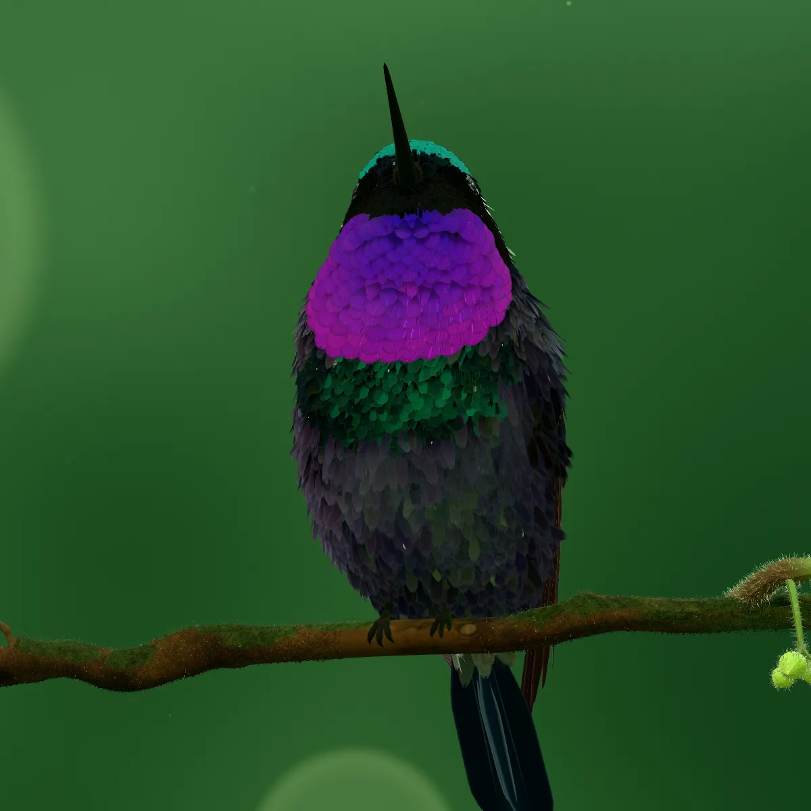

一只蜂鸟停在长着苔藓和星形小花的嫩枝上。它几乎正对你，喙微微抬起；头顶有一点蓝绿，喉部是一块会突然亮起来的紫红色羽斑。这是 Theo Tillberg（GitHub ttillberg，X @theo_t）为 Codevember 2026 第 12 天的词「Feather」做的浏览器作品。页面标题写成「12 · Feather」，副题里有日文「羽根」。本页以这件作品为中心，也交代它所属的十一月系列。仓库在 2026-11-15（新加坡时间）现场核到是 MIT，所以下面有导读、两份 README 的全文中译，以及许可证原文。封面是本站在作品页里实时渲染后截的一帧，不是作者的宣传视频。
LICENSE 于 2026-11-15（新加坡时间）经 raw.githubusercontent.com 现场核对为 MIT License（Copyright (c) 2026 Theo Tillberg）。GitHub 仓库页同样标注 MIT（spdxId: MIT），根目录 package.json 的 license 字段也是 MIT。按本站规则，本页为项目导读 + README 全文中译 + 许可证原文。依赖的 three.js 是独立开源项目，许可不能外推到仓库以外的第三方素材；本日未见作者另外声明第三方贴图或录音。作者本人的短帖全文中译并附原文。本页不转载、不下载原帖视频，也不转载系列首页里的预览视频。
?still&clean&nopost：相机不再晃，界面文字关掉，并跳过景深和调色。它仍是同一套实时画面，只是没有那一层后期。© 2026 Theo Tillberg，MIT License。画面里没有人物。这是什么
第 12 天的演示页把作品写成：「一只绑好骨骼、停在枝上、带着虹彩羽毛的蜂鸟」（A rigged hummingbird, perched, with iridescent feathers）。日录 12/README.md 写得更具体：这是一只紫喉山宝石蜂鸟（purple-throated mountain-gem，源码里的学名是 Lampornis calolaemus），根据「几秒参考影像」做成；它有绑定，会按程序自己活动，每一根羽毛都是真正的几何体。作者还写，鸟和 Blender 栖枝用 Fable 5.2 完成，场景、后期和粘合用 Opus 5.5。这些制作过程是作者自述，本页没有对照会话记录或参考影像 ⚠️。
它属于仓库 ttillberg/codevember-2026：2026 年十一月里，尽量一天做一个小实验，词表来自 @thespite 分享的提示清单。README 写明：「不是每天都做，这样也没关系。」2026-11-15 看到的系列首页写着「6 of 30 days」，已经上线的是第 5 天 Moss、第 6 天 Orrery、第 7 天 Hollow、第 8 天 Tesseract、第 9 天 Membrane，以及这一天的 Feather。其他日子在表里还是空的。本页不展开那五件作品，只把它们当作同一系列里的邻作。
仓库公开首页在核对当日的内嵌数据里，创建时间是 2026-11-05 22:14（新加坡时间；上游记录 2026-11-05T14:14:19.000Z），star 约为 15，watch 约为 0；这些都会变 ⚠️。GitHub Pages 上这一天的页面 Last-Modified 为 2026-11-15 01:38（新加坡时间；上游 2026-11-14T17:38:41 GMT）。依赖是 three.js ^0.187.0 与 Vite，日录 package.json 把这一天标为 2026-11-12。
怎么看、怎么互动
打开页面后，先会看到一张画在方格纸上的墨水线稿，栖枝的 Blender 模型载入后，再淡入成片。你可以拖动镜头，在一个偏前方的范围内绕着看，但不能转到背后或钻到枝下；手机上单指不会拖镜头，而是像鼠标悬停一样被鸟注意到，双指仍可缩放。移动指针时，它常常会把喙转过来跟着看；指针停住后，它很快回到自己的事上。点击会在面前的空中丢下一粒种子，它可能注视、再啄住、用舌头送进去。按空格会吓到它。页面右下角还有动作按钮和设置：丢种子、放进一只小虫、让它唱歌、抖羽、飞走、换一套颜色，以及手持感、景深、曝光和喉斑闪光的强度。
键盘也暴露了不少内部开关。作者在回复里对 @BlurSpline 说：按 H 就能看出真相。源码里，H 会沿脖子切开，把头以上改成线框。其他调试参数写在这一天的 README 里，例如 ?nopost 关掉后期，?procbranch 退回程序化小枝，?bones 和 ?wire 查看骨骼与线框。设置里还有一段约半分钟的 Demo 脚本，会依次示范抖羽、捉虫、唱歌和啄种子。
有一处需要并置来看。这一天的 README 写「它还不会飞」，但当日源码已经有「飞走」：按 F 或动作菜单会让它起飞离开，几秒后再回到枝上。本页把「飞走」写成源码里已经存在的行为，并标明 README 这句可能稍旧 ⚠️。
它是怎么做出来的
实现都在 12/src 里，作者自己的 README 已经把结构写清楚。下面按源码核对后的理解来写，不改写成另一种做法。
- 一层层写出姿态，再一次落到骨头上。呼吸、注视、眨眼、抖羽、尾巴、翅膀、觅食、受惊和离开，各自作为一层去写一个共用的
Pose，再由求解器变成骨骼和羽毛的着色器参数。要加一种新行为，再加一层就行。 - 身体是一条放样，羽毛是真的卡片。身体从尾根放到喙基并蒙皮；喉部有一处牵引，让喉斑跟着头转。体羽、翅羽和尾羽是带蒙皮的几何，不是贴在身上的一张纹理。作者写道大约 1.1 万根体羽，外加翅羽和尾羽，本页没有逐根清点 ⚠️。每根羽毛在顶点着色器里绕根部铰接，所以抖羽是羽毛离皮肤掀起的波浪，而不是身体变胖。羽支、羽轴和边缘在片元着色器里画，并用 alpha to coverage 处理边缘。收拢的翅膀还要和身体做一次间隙求解，免得穿模。
- 那一下紫色，不是薄膜公式。喉斑和头顶的闪光，来自每根羽毛自己的「血小板」法线周围一条收得很紧的瓣：正面看是一种颜色，掠射时滑向另一种。作者明确写：这是按观感引导的，不是薄膜干涉模型。他在「学到的」一节里说，闪光就是一切；给整个身体上色从来都不对。源码里还能用 C 键在几种蜂鸟配色之间转：紫喉山宝石、红喉、安娜、蓝喉、火喉，只是把色相、饱和度和明度做成矩阵，交给同一套羽毛着色器。
- 活着的感觉，先来自头，而不是翅膀。注视是 40 到 95 毫秒的最小加加速度扫视，到达时带一点回振，然后在几乎不动的停顿里加上微颤；头在世界空间里稳住，不跟着身体晃。作者的总结是：停着的蜂鸟，是一个几乎不动的身体，上面顶着一个会瞬移的头——扫视时序做对了，羽毛还没动，它就已经活了。
- 枝条会让一下。默认栖枝是 Blender 里做的毡质嫩茎，带 4K 颜色、法线和 ORM，以及苔藓和会点头的星形小花；程序化小枝留作后备。鸟停在上面时，枝会在顶点着色器里弯曲，鸟跟着走。焦点对着头，鸟离开枝子时，镜头不会把焦立刻甩到空中。
- 成片还要经过一层后期。默认把场景画进 4 倍 MSAA 的半精度目标，对头部做景深，再用 Neutral 色调映射，并对照参考影像做了略微偏冷、阴影里带一点李子色的调色，加上颗粒和暗角。本页封面为了在无硬件加速的环境里稳定出图，关掉了这一层。
绑定方面，README 写「79 根具名的 THREE.Bone」。按当日 bird/rig.ts 和物种数据清点：中轴和舌骨、两侧眼睛与眼睑瞬膜、每侧肩臂手加 10 根初级飞羽和 6 根次级飞羽、每侧 5 根尾羽，以及脚、跗跖和四趾，一共是 84 根。本页以源码清点为准，并标出与 README 的差异 ⚠️。
同类可对照的浏览器 three.js 作品，还有 Painted Valley、Casa Ocaso、Yarn World、Ultra Water。作者提到 Fable 5.2，也可以对照 官方的 Fable 5.2 提示词指南导读。那些不是同一件作品，也不并入本页。
作者怎么介绍它
作者在 2026-11-12 23:27（新加坡时间，UTC+8）发了一条短帖，带作品链接和一段视频。帖文只有两行。本页不下载、不转载这段视频，也没有观看它 ⚠️。
vibe #codevember / 12 Feather
听说你们喜欢鸟
vibe #codevember / 12 Feather
I heard you liked birds
作者：Theo Tillberg（@theo_t）；发布：2026-11-12 23:27（新加坡时间）。原帖附视频，点击观看。同一条帖下，他在 2026-11-13 08:17（新加坡时间）回复 @BlurSpline：「按 H 就能看出真相 😂」（hit H key to figure the truth 😂）。另外两条回复分别链到仓库首页，以及一张本页未转载的图片。做法说明主要写在仓库的 12/README.md 里，而不是写在原帖正文中。
2026-11-15 约 14:57（新加坡时间）经 X 接口读取时，这条帖约 24,035 次浏览、98 个赞、9 次转发、13 条回复、2 次引用、54 次收藏；作者账号当时约 753 名关注者。这些数字会变，只作当时记录。
许可
2026-11-15（新加坡时间）现场核对：根目录 LICENSE 为 MIT License，版权人为 Theo Tillberg，年份 2026；README 的许可一节只写了「MIT」；根目录 package.json 亦为 MIT。GitHub 仓库页标签与之一致。未调用 api.github.com。仓库内的栖枝模型与贴图随源码一起提供，未见另外的素材许可文件。three.js、页面所用的 IBM Plex Sans 与 Inter 字体是独立项目，不因本仓库的 MIT 而改变它们自己的条款。代码许可不能外推到作者原帖里的视频画面；本页因此不转载视频。
核实边界与署名
- 这是以《Feather》为中心的项目导读，并说明它属于 Codevember 2026 系列。仓库为 MIT，本页附 README 全译与许可证原文。
- 本站打开过在线作品页，并用无头 Chrome（SwiftShader）截取封面。这不是在独立显卡上的完整体验，默认后期路径在该环境下几乎停在加载用的方格纸线稿上 ⚠️。
- ⚠️ 未下载、未观看原帖视频，也未转载系列首页里各天的预览视频。
- ⚠️ 「根据几秒参考影像做成」、以及「鸟和栖枝用 Fable 5.2、场景与后期用 Opus 5.5」，是作者在 README 里的自述，未对照参考影像或会话。
- ⚠️ README 写「还不会飞」「79 根骨头」「指针停住 2 秒后回到自己的事上」；当日源码已有飞走，清点为 84 根骨头，指针停止后约 300 毫秒就不再当作兴趣点。本页以源码为准，并保留 README 原文翻译。
- ⚠️ 「约 1.1 万根体羽」为作者自报，未逐根清点。星数、浏览和点赞是核对当日的快照，会变。
- 物种中文名「紫喉山宝石蜂鸟」是对 purple-throated mountain-gem / Lampornis calolaemus 的通用译法；本页没有另核分类学来源。
附录一、第 12 天 README 全文中译
译自 12/README.md（2026-11-15 经 raw.githubusercontent.com 抓取），作者 Theo Tillberg，MIT。
12 / Feather
2026-11-12
一只停在长满苔藓的小枝上的紫喉山宝石蜂鸟，是根据几秒参考影像做出来的。它有绑定、会按程序自己活动，每一根羽毛都是真正的几何体。它还不会飞。它坐在那里，呼吸，突然转头，眨眼，抖羽，轻弹尾巴；当喙转向你时，喉部的羽斑会从暗栗色一下子亮成一片紫罗兰。拖动可以绕着看，移动指针时它可能会朝那边看，点击或按空格会吓到它。
做法
- 绑定（
bird/rig.ts）：79 根具名的THREE.Bone。脊柱、颈链、头、喙和下颌、眼睛、眼睑和瞬膜，翅膀一直分到每一根初级飞羽和次级飞羽，一把十根羽毛的尾扇，以及缠在栖枝上的腿和脚趾。翅膀已经准备好收拢和展开两套姿态。 - 身体（
bird/loft.ts）：一条从尾根到喙基的参数化放样，并做了蒙皮。一处喉部牵引把颈前侧绑到头上，这样喉斑会跟着喙转。 - 运动（
bird/motion/*，bird/pose.ts）：各层写入一个Pose，求解器再把它变成骨骼和羽毛的 uniform。姿态、呼吸、注视、眨眼、抖羽、尾巴、翅膀、受惊。注视是 40 到 95 毫秒的最小加加速度扫视，到达时带一点回振，然后在死一般的停顿里加上微颤；头在世界空间里保持稳定，不跟着身体晃。要加一种新行为，再加一层就行。 - 羽毛（
bird/plumageGeometry.ts，bird/plumageMaterial.ts）：大约 1.1 万根体羽，再加上翅羽和尾羽，两套蒙皮网格，一种材质。每根羽毛在顶点着色器里绕根部铰接，所以抖羽是羽毛离皮肤掀起的波浪，而不是身体变胖。羽支、羽轴和梳理过的边缘在片元着色器里画，用 alpha to coverage。喉斑和头顶的闪光，来自每根羽毛自己的血小板法线周围一条很窄的瓣；这是按观感引导的，不是薄膜干涉模型。阴影通道用同样的铰接。每类羽毛有一个loose值，从干脆的喉部鳞片，到绒质的面部、羽支张开的松软腹羽和胁羽，再到翅膀上的一簇绒。松软的羽毛会有抖动、结簇和分缝，哑光羽支带裂开的羽片，闪光落在单根羽支上，而不是整根羽毛。收拢的翅膀通过与身体的间隙求解来放置，让它们贴在身上，而不是穿过去。 - 觅食（
bird/motion/forage.ts，seeds.ts）：点击会在空中丢下一粒种子。看见的种子会被盯着；够得着的会被取走：先犹豫一下，再稍微蓄力，用 120 到 200 毫秒扑向种子将要到达的位置，途中张喙，碰到时闭上，然后分叉的舌头舔三次，把种子顺喙吞下去，再咀嚼、咽下、甩一下头。舌头（下颌下的三根骨头）偶尔也会自己伸出来；?sing会做出歌唱的姿态。够到目标的方法是求解器里的解析 IK：头的枢轴沿指向目标的直线滑动，直到喙尖落到上面，这段平移再分给颈部，看起来像脖子伸展开来。 - 休息时的翅膀是身体的一部分：放样上一条隆起的带，被覆羽和飞羽羽区覆盖，像普通体羽一样蒙皮，所以不会松脱。只有外侧初级飞羽的尖是自由的叶片。真正的臂和叶片仍然在，只是收起来，随着
spread升高再长出来。 - 物种（
bird/species.ts）：比例、羽区、颜色和节奏都做成数据，换一只鸟就是换一个对象。 - 栖枝（
model/branch.blend→public/branch.glb）：在 Blender 里建模，一根毡质的嫩茎（锈斑、棕褐、一块紫色淤伤，朝梢头渐渐转绿），烘焙成 4K 的颜色、法线和 ORM，并用 Cycles 把上面所有东西的 AO 烘焙进去；上面还有不到十层卷曲的棕色毡毛（在env/branch.ts里画了三层，烘焙出来的稻草卡片看起来太直），苔藓簇，以及一侧带着毛、会点头的星形小花。它沿用程序化小枝的约定：半径 0.09，抓握处的上表面经过原点，这样脚趾才能合上。程序化小枝仍作为后备（?procbranch）。 - 指针：移动时，大多数注视会喙朝向它，头会带着扫视之间的滞后跟着滑，再猛地跟上；停住 2 秒，它就回到自己的事上去。
- 场景（
main.ts，env/*）：相机周围一个球面，上面是失焦的森林，同样烘焙进环境贴图（饱和度减半），这样羽毛会反射同样的绿，自己却不会变绿。 - 后期（
post.ts）：场景画进 4 倍 MSAA 的半精度目标，再做一次对焦在头部的景深收集，然后是 Neutral 色调映射，以及对照参考影像用眼睛和取样颜色对过的调色：更亮一点，略微偏冷，阴影里带一点李子色，还有颗粒和暗角。?nopost会跳过这些。
调试：?nopost，?procbranch，?nofuzz，?pose=front|profile|up|back|three，?gaze=yaw,pitch,roll，?quiet，?arousal=0..1，?fluff=，?spread=0..1，?fan=0..1，?bones，?skin，?wire，?noflash。可用 window.__bird 去拨弄。
学到的
- 闪光就是一切。按每根羽毛的法线和一条收得很紧的瓣来做，才会读成结构色。给整个身体上色从来都不对。
- 停着的蜂鸟，是一个几乎不动的身体，上面顶着一个会瞬移的头。把扫视的时序做对，羽毛还没动，它就已经活了。
- 收拢的翅膀是弱项：从正面看，肚子会挡住它们的大半。
鸟和 Blender 栖枝用 Fable 5.2 完成，场景、后期和粘合用 Opus 5.5。
pnpm -C 12 dev附录二、仓库 README 全文中译
译自仓库根目录 README.md（2026-11-15 抓取），作者 Theo Tillberg，MIT。表中的「查看 / 源码」在原文里是指向演示页和仓库目录的链接。
Codevember 2026
2026 年十一月期间，一天一个小项目。不是每天都做，这样也没关系。
词表来自 @thespite 分享的提示清单。
在线：https://ttillberg.github.io/codevember-2026/
| 日 | 词 | 实验 | 源码 |
|---|---|---|---|
| 01 | Fold | — | — |
| 02 | Shatter | — | — |
| 03 | Melt | — | — |
| 04 | Tangle | — | — |
| 05 | Moss | 查看 | 源码 |
| 06 | Orrery | 查看 | 源码 |
| 07 | Hollow | 查看 | 源码 |
| 08 | Tesseract | 查看 | 源码 |
| 09 | Membrane | 查看 | 源码 |
| 10 | Caustic | — | — |
| 11 | Rust | — | — |
| 12 | Feather | 查看 | 源码 |
| 13 | Labyrinth | — | — |
| 14 | Tension | — | — |
| 15 | Mirage | — | — |
| 16 | Spore | — | — |
| 17 | Kelp | — | — |
| 18 | Pendulum | — | — |
| 19 | Erosion | — | — |
| 20 | Cocoon | — | — |
| 21 | Bolt | — | — |
| 22 | Echo | — | — |
| 23 | Magma | — | — |
| 24 | Nest | — | — |
| 25 | Veil | — | — |
| 26 | Anamorph | — | — |
| 27 | Burrow | — | — |
| 28 | Hive | — | — |
| 29 | Portal | — | — |
| 30 | Dissolve | — | — |
进行中
pnpm install
pnpm new 05 # 从 template/ 搭出第 05 天
pnpm -C 05 dev # 某一天的开发服务器
pnpm build # 把每天编进 dist/，并重新生成首页和这张表许可
MIT
附录三、LICENSE 原文
MIT License
Copyright (c) 2026 Theo Tillberg
Permission is hereby granted, free of charge, to any person obtaining a copy
of this software and associated documentation files (the "Software"), to deal
in the Software without restriction, including without limitation the rights
to use, copy, modify, merge, publish, distribute, sublicense, and/or sell
copies of the Software, and to permit persons to whom the Software is
furnished to do so, subject to the following conditions:
The above copyright notice and this permission notice shall be included in all
copies or substantial portions of the Software.
THE SOFTWARE IS PROVIDED "AS IS", WITHOUT WARRANTY OF ANY KIND, EXPRESS OR
IMPLIED, INCLUDING BUT NOT LIMITED TO THE WARRANTIES OF MERCHANTABILITY,
FITNESS FOR A PARTICULAR PURPOSE AND NONINFRINGEMENT. IN NO EVENT SHALL THE
AUTHORS OR COPYRIGHT HOLDERS BE LIABLE FOR ANY CLAIM, DAMAGES OR OTHER
LIABILITY, WHETHER IN AN ACTION OF CONTRACT, TORT OR OTHERWISE, ARISING FROM,
OUT OF OR IN CONNECTION WITH THE SOFTWARE OR THE USE OR OTHER DEALINGS IN THE
SOFTWARE.